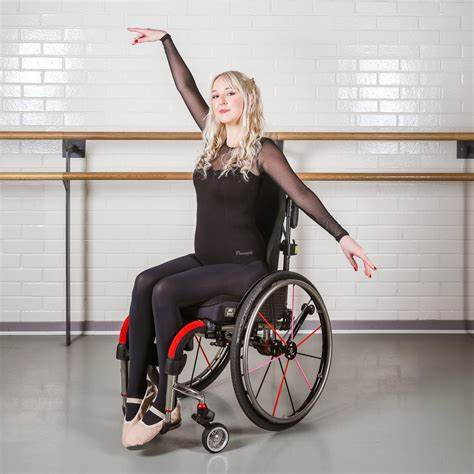
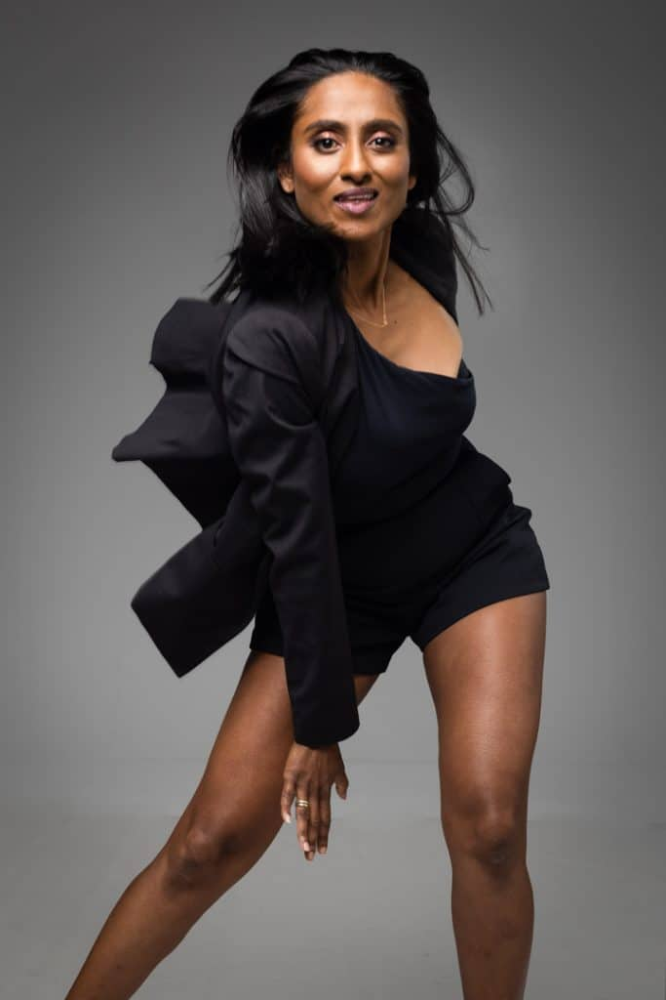
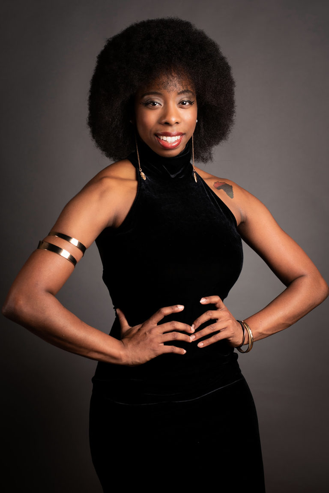

Kate Gin - Owner and Director
Ballet
Kate is the owner and director of Black Swan Dance. She was limited due her disability when she was younger and wanted to create an organization for anyone with no limits! She has been dancing since she was 18 when she took her first dance class for disabilities. She wanted to create an organization like her first dance class! Kelly became a Texas Certified teacher in 2018 and started teaching dance to those with disabilties starting at the age of three (3).

Jenisis Bernid
Improv
Jeni is a trained dancer who has been taking classes since she was eight (8) years old! Since then, she has received her BFA in Dance from New World School of the Arts and has been performing, touring and teaching Contemporary Dance. She is interested in offering space for those who are interested in dance but don't know where to start. If someone is intimidated, she wants to make sure everyone is welcome, especially in Black Swan Dance!

Ashanti Baya
Contemporary
Ashanti began her dance training in Perth in Contemporary, Jazz, Tap, Ballet and Flamenco. At the age of 18 Ashanti completed her Commonwealth Society Teachers of Dance Theatrical Student Teachers Diploma, and later completed the Spanish Dance Institute Teaching certificate. As a performer in Perth, Ashanti was employed as a dancer by Bent Knee Creative, performing in several corporate events on Perth's social calendar.

Dia Adams
Jazz and Modern
Strengthened by her own experiences with chronic illness, Dia's belief is that everyone is deserving of inclusive and accessible spaces, and that all movement is worthy whether it's sitting, standing, laying down, outside, in the kitchen, or in a studio. Dia uses mindfulness as a tool in dance and movement. She has taught a group class series for the Chronically Capable's community, as well as an accessibility and inclusion workshop for the meditation teachers at the IDP.